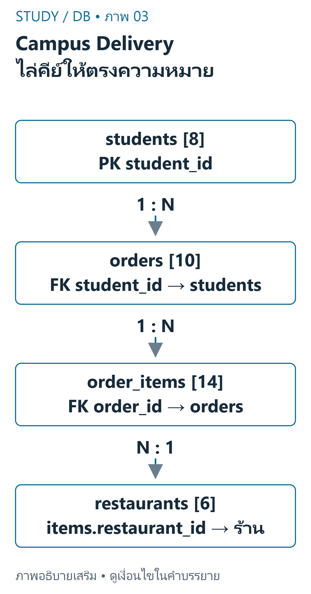
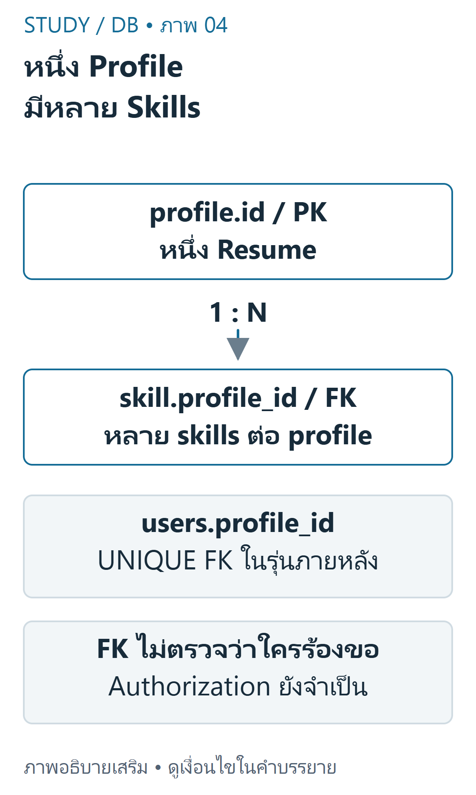

DB 02 — ตาราง คีย์ และความสัมพันธ์ อิง DB-S01 หน้า14–17, DB-S02 หน้า3–7, schema ใน DB-D01 และ Resume starters โดยใช้ความสัมพันธ์ที่ตรวจจาก CREATE TABLE จริง
เป้าหมายการเรียนรู้ ระบุ Table, Row, Column, Primary Key และ Foreign Key จาก schema อ่านความสัมพันธ์1:N ของ Resume และ Campus Delivery เลือกชนิดข้อมูลตามความหมาย และอธิบายการป้องกันข้อมูลอ้างอิงผิด ตารางและคีย์ ตาราง (Table) ประกอบด้วยแถวข้อมูล (Row) และคอลัมน์ (Column) ภายใต้ข้อกำหนด schema Primary Key ระบุแถวได้ไม่ซ้ำและไม่เป็น NULL; Foreign Key กำหนดความสัมพันธ์การอ้างอิงกับคีย์ของตารางที่เกี่ยวข้อง ไม่ได้ทำให้ข้อมูลจากสองตารางแสดงรวมกันโดยอัตโนมัติ
คอลัมน์ที่ชนิดเป็น INT เหมือนกันอาจหมายถึงคนละสิ่ง students.student_id ต้องจับกับ orders.student_id ไม่ใช่ orders.order_id และ Foreign Key สามารถมีค่าซ้ำในตารางลูกได้เพราะพ่อหนึ่งแถวมีลูกหลายแถว
Campus Delivery ที่ตรวจจากต้นฉบับ ชุด homework DB-D01 มี8students,6restaurants,10orders,14order_items ทุกออเดอร์อ้างนิสิตที่มีจริงและทุกรายการอ้างออเดอร์/ร้านที่มีจริง ข้อกำหนดไม่ได้บังคับว่านิสิตทุกคนต้องมีออเดอร์หรือร้านทุกแห่งต้องเคยขาย

ภาพเขียนเสริม: Campus Delivery ไล่คีย์ให้ตรงความหมาย — ตัวเลขคือจำนวน records ไม่ใช่ quantityภาพเขียนเสริม ตรวจตามบทเรียนและเอกสารเทคนิค อ่านภาพ: students มี8 records; orders10อ้าง student_id; order_items14อ้าง order_id และ restaurant_id; restaurants6 ไม่เชื่อม student_id กับ order_id แม้เป็นเลขทั้งคู่
ตัวอย่างพื้นฐาน: มีนา101มีออเดอร์5001และ5003 แสดงความสัมพันธ์1:N ส่วน106,107,108ไม่มีออเดอร์ก็ยังเป็นแถว students ที่ถูกต้องได้ ร้าน206ชื่อ NULL Cafe เป็นข้อความจริง ไม่ใช่ SQL NULL
SQL คัดลอกโค้ด
1 CREATE TABLE students ( 2 student_id INT PRIMARY KEY, 3 student_name VARCHAR(100) NOT NULL, 4 faculty VARCHAR(100) NOT NULL 5 ); 6 CREATE TABLE orders ( 7 order_id INT PRIMARY KEY, 8 student_id INT NOT NULL, 9 order_date DATE NOT NULL, 10 total_amount DECIMAL(10,2) NOT NULL, 11 status VARCHAR(30) NOT NULL, 12 FOREIGN KEY (student_id) REFERENCES students(student_id) 13 ); รันเฉพาะฐานข้อมูลทดลองใหม่ที่ตั้งใจไว้ ไม่รันซ้ำทับงานเดิม DATE เก็บวันที่, DECIMAL(10,2) เก็บค่าฐานสิบที่มีสเกล2 ไม่ควรใช้ข้อความวันที่หรือจำนวนเงินชนิดลอยตัวเพียงเพราะแสดงผลได้ status VARCHAR(30) ในต้นฉบับไม่ได้มี CHECK/ENUM จึงต้องแยกสิ่งที่ dataset ใช้จากค่าที่ DB อนุญาตทั้งหมด
Resume: จาก2ตารางไป4ตาราง DB-Z01 เริ่มด้วย profile และ education; skill/training เป็นงานออกแบบเพิ่ม ขณะที่ DB-Z02 มี DDL ครบ4ตารางและ skill ตัวอย่าง3แถว อย่าอ้างว่า starter แรกมีคำตอบครบแล้วหรือเพิ่มตารางขึ้นในไฟล์ต้นฉบับโดยไม่แจ้ง

ภาพเขียนเสริม: หนึ่ง Profile มีหลาย Skills — แยก schema คนละระยะภาพเขียนเสริม ตรวจตามบทเรียนและเอกสารเทคนิค อ่านภาพ: profile.id เป็น PK และ skill.profile_id เป็น FK หลาย skills จึงอ้าง profile เดียวได้ Users ที่เพิ่มภายหลังเชื่อม profile ผ่าน UNIQUE FK ไม่ใช่คอลัมน์ใน minimal slide schema
SQL คัดลอกโค้ด
1 CREATE TABLE skill ( 2 id INT AUTO_INCREMENT PRIMARY KEY, 3 profile_id INT NOT NULL, 4 skill_name VARCHAR(120) NOT NULL, 5 skill_level VARCHAR(50), 6 FOREIGN KEY (profile_id) REFERENCES profile(id) ON DELETE CASCADE 7 ); หนึ่ง profile มีหลาย skill ได้ จึงไม่ตั้ง profile_id เป็น UNIQUE ใน skill การลบ profile จะลบ skill ตาม ON DELETE CASCADE ของ Resume schema นี้ แต่ Campus schema ไม่ได้ประกาศ CASCADE แบบเดียวกัน ต้องอ่านแต่ละ constraint ไม่เหมารวม
Referential integrity และการทดสอบ ใน fixture ที่เปิดใช้ Foreign Key การเพิ่มออเดอร์ที่อ้าง student999ซึ่งไม่มีอยู่ต้องถูกปฏิเสธ และการเพิ่ม student101ซ้ำต้องผิด PK การป้องกันนี้ทำงานที่ฐานข้อมูล แต่ยังต้องตรวจ input/สิทธิ์ใน PHP เพื่อให้ผู้ใช้ได้รับพฤติกรรมที่เหมาะสม
ตัวอย่างต่อยอด: หากแก้ skill.profile_id ให้เป็น UNIQUE จะทำให้นิสิตหนึ่งคนมีได้ไม่เกินหนึ่ง skill ซึ่งขัดโจทย์1:N ต่างจาก users.profile_id UNIQUE ใน migration ของ public repository ที่ตั้งใจผูกหนึ่งบัญชีกับหนึ่ง profile
Data Dictionary และผลที่คาด Data Dictionary ควรระบุชื่อคอลัมน์ ชนิด ความหมาย nullability คีย์และข้อจำกัด ไม่ใช่รายการชื่อฟิลด์อย่างเดียว เช่น total_amount มีหน่วยบาท, qty คือจำนวนรายการอาหาร ไม่ใช่ราคา และ schema ของ Campus ไม่มีราคาต่อชิ้นให้คำนวณใบเสร็จใหม่จาก qty ได้
การทำ normalization ขั้นสูงอยู่นอกหลักฐานแลปชุดนี้ สามารถศึกษาเพิ่มภายหลังได้ แต่ไม่ควรระบุว่าเป็นข้อสอบที่ผู้สอนรับรอง
เนื้อหาฝึกเขียนและเฉลยต่อไปนี้เรียบเรียงเพื่อการเรียน ไม่ใช่ข้อสอบจริงหรือเฉลยทางการของผู้สอน เว็บไซต์นี้แสดงตัวอย่างแบบ static; ไม่ส่ง SQL, PHP หรือข้อมูลบัญชีไปรันบนเซิร์ฟเวอร์มหาวิทยาลัย
ข้อผิดพลาดที่พบบ่อย คิดว่า FK ต้องไม่ซ้ำ หรือคิดว่าตารางพ่อทุกแถวต้องมีลูก ใช้คีย์คนละความหมายเพราะชนิด INT เหมือนกัน คิดว่า DEFAULT/NOT NULL หรือ CASCADE มีเหมือนกันทุก schema นำ script ที่มี DROP ไป import ลงฐานข้อมูลที่มีงานอยู่แล้ว ฝึกคิดพร้อมเหตุผล ข้อ1: ต้องเก็บหลาย education ต่อ profile คีย์ใดซ้ำได้? เฉลย: profile_id ใน education ซ้ำได้ ส่วน education.id ต้องไม่ซ้ำข้อ2: ร้าน206ไม่มีรายการขาย ผิด FK หรือไม่? เฉลย: ไม่ผิด FK ตรวจลูกที่มีให้อ้างพ่อถูกต้อง ไม่ได้บังคับพ่อทุกแถวมีลูกข้อ3: ทำไม total_amount และ qty รวมเป็นเงินด้วยกันไม่ได้? เฉลย: qty เป็นจำนวนและไม่มีราคาต่อชิ้นใน schema นี้ ต้องรู้ความหมาย/หน่วยและข้อมูลเพิ่มเติมก่อนคำนวณสรุปทบทวน PK ระบุแถว; FK กำหนดการอ้างอิง; JOIN เป็นคำสั่งดึงข้อมูลอีกเรื่องหนึ่ง อ่าน1:N, nullability และพฤติกรรม DELETE จาก DDL จริง แยกสอง Resume starters และสองชุด Campus ให้ถูกต้อง แหล่งข้อมูลและขอบเขต DB-S01 หน้า14–17; DB-S02 หน้า4–7; DB-D01 schema/indexes/38 simulated rows; DB-Z01 database/starter.sql; DB-Z02 database/setup.sql; DB-R01 database/this_week_migration.sql. อ้างอิงเสริม MySQL foreign keys และ fixed-point types .
บัญชีแหล่งข้อมูลและข้อจำกัด ระบุเลขหน้ากายภาพของ PDF ทุกครั้ง เอกสารต้นฉบับที่ผู้ใช้ให้เป็นไฟล์ local-only และไม่ได้เผยแพร่ซ้ำ ภาพและโจทย์ฝึกเป็นงานเขียนเสริมที่แยกจากต้นฉบับ
โหมดฝึกทำโจทย์ โจทย์ฝึกที่ผู้เขียนจัดทำ ไม่ใช่ข้อสอบจริงหรือเฉลยทางการ; การประเมินตนเองไม่รวมในคะแนนอัตโนมัติ
โจทย์ฝึกที่ผู้เขียนจัดทำ ไม่ใช่ข้อสอบจริง: PKมีหน้าที่ใดในหนึ่งtable? A. เข้ารหัสpassword B. ทำให้ทุกคอลัมน์unique C. ระบุrowให้ไม่ซ้ำและไม่เป็นNULL D. รับรองว่าผู้ร้องขอเป็นowner ทบทวนเนื้อหาที่เกี่ยวข้อง อ่านเฉลยและแนวประเมิน ระบุrowให้ไม่ซ้ำและไม่เป็นNULL
PKเป็นidentityของrow ไม่ใช่authorization
โจทย์ฝึกที่ผู้เขียนจัดทำ ไม่ใช่ข้อสอบจริง: คีย์ใดเชื่อมordersกับstudentsในCampus? A. orders.order_id → students.student_id B. orders.total_amount → students.student_name C. order_items.item_id → students.faculty D. orders.student_id → students.student_id ทบทวนเนื้อหาที่เกี่ยวข้อง อ่านเฉลยและแนวประเมิน orders.student_id → students.student_id
ตรวจFKจากschemaจริง ไม่เทียบเพราะทั้งคู่เป็นเลข
โจทย์ฝึกที่ผู้เขียนจัดทำ ไม่ใช่ข้อสอบจริง: profileหนึ่งคนมีหลายskills เป็นความสัมพันธ์ใด? A. 1:N B. 1:1ที่บังคับเสมอ C. N:Nโดยไม่มีตารางเชื่อม D. ไม่มีreference ทบทวนเนื้อหาที่เกี่ยวข้อง อ่านเฉลยและแนวประเมิน 1:N
skillเก็บprofile_idหลายแถวอ้างprofileเดียวได้
โจทย์ฝึกที่ผู้เขียนจัดทำ ไม่ใช่ข้อสอบจริง: ในDB-D01 Campus fixtureต้นฉบับ ตารางstudentsมีกี่rows? ทบทวนเนื้อหาที่เกี่ยวข้อง อ่านเฉลยและแนวประเมิน 8
อ่านINSERTและfixtureจริง มีID101–108 ไม่ใช่slide4คน
โจทย์ฝึกที่ผู้เขียนจัดทำ ไม่ใช่ข้อสอบจริง: insertorderอ้างstudent999ที่ไม่มีอยู่เมื่อFKทำงาน ควรเกิดอะไร? A. สร้างstudentให้เอง B. เปลี่ยน999เป็นNULLเองเสมอ C. constraintปฏิเสธ D. ปิดFKถาวรโดยอัตโนมัติ ทบทวนเนื้อหาที่เกี่ยวข้อง อ่านเฉลยและแนวประเมิน constraintปฏิเสธ
FKรักษาreference ไม่สร้างentityปลายทางให้
โจทย์ฝึกที่ผู้เขียนจัดทำ ไม่ใช่ข้อสอบจริง: วาดFKของCampusทั้งสี่tablesพร้อมcardinality ทบทวนเนื้อหาที่เกี่ยวข้อง อ่านเฉลยและแนวประเมิน ประเมินคำอธิบายตามเกณฑ์ทีละข้อ; โจทย์นี้ไม่มีคะแนนอัตโนมัติ
ระบุ3เส้นFKถูก แยกorderจากitem ไม่เชื่อมstudent_idกับorder_id คลังข้อสอบฝึกเพิ่มเติม โจทย์ที่ผู้เขียนจัดทำ ไม่ใช่ข้อสอบจริง การประเมินตนเองไม่รวมคะแนน
โจทย์ฝึกที่ผู้เขียนจัดทำ ไม่ใช่ข้อสอบจริง: PKมีหน้าที่ใดในหนึ่งtable? A. เข้ารหัสpassword B. ทำให้ทุกคอลัมน์unique C. ระบุrowให้ไม่ซ้ำและไม่เป็นNULL D. รับรองว่าผู้ร้องขอเป็นowner ทบทวนเนื้อหาที่เกี่ยวข้อง อ่านเฉลยและแนวประเมิน ระบุrowให้ไม่ซ้ำและไม่เป็นNULL
PKเป็นidentityของrow ไม่ใช่authorization
โจทย์ฝึกที่ผู้เขียนจัดทำ ไม่ใช่ข้อสอบจริง: คีย์ใดเชื่อมordersกับstudentsในCampus? A. orders.order_id → students.student_id B. orders.total_amount → students.student_name C. order_items.item_id → students.faculty D. orders.student_id → students.student_id ทบทวนเนื้อหาที่เกี่ยวข้อง อ่านเฉลยและแนวประเมิน orders.student_id → students.student_id
ตรวจFKจากschemaจริง ไม่เทียบเพราะทั้งคู่เป็นเลข
โจทย์ฝึกที่ผู้เขียนจัดทำ ไม่ใช่ข้อสอบจริง: profileหนึ่งคนมีหลายskills เป็นความสัมพันธ์ใด? A. 1:N B. 1:1ที่บังคับเสมอ C. N:Nโดยไม่มีตารางเชื่อม D. ไม่มีreference ทบทวนเนื้อหาที่เกี่ยวข้อง อ่านเฉลยและแนวประเมิน 1:N
skillเก็บprofile_idหลายแถวอ้างprofileเดียวได้
โจทย์ฝึกที่ผู้เขียนจัดทำ ไม่ใช่ข้อสอบจริง: ในDB-D01 Campus fixtureต้นฉบับ ตารางstudentsมีกี่rows? ทบทวนเนื้อหาที่เกี่ยวข้อง อ่านเฉลยและแนวประเมิน 8
อ่านINSERTและfixtureจริง มีID101–108 ไม่ใช่slide4คน
โจทย์ฝึกที่ผู้เขียนจัดทำ ไม่ใช่ข้อสอบจริง: insertorderอ้างstudent999ที่ไม่มีอยู่เมื่อFKทำงาน ควรเกิดอะไร? A. สร้างstudentให้เอง B. เปลี่ยน999เป็นNULLเองเสมอ C. constraintปฏิเสธ D. ปิดFKถาวรโดยอัตโนมัติ ทบทวนเนื้อหาที่เกี่ยวข้อง อ่านเฉลยและแนวประเมิน constraintปฏิเสธ
FKรักษาreference ไม่สร้างentityปลายทางให้
โจทย์ฝึกที่ผู้เขียนจัดทำ ไม่ใช่ข้อสอบจริง: วาดFKของCampusทั้งสี่tablesพร้อมcardinality ทบทวนเนื้อหาที่เกี่ยวข้อง อ่านเฉลยและแนวประเมิน ประเมินคำอธิบายตามเกณฑ์ทีละข้อ; โจทย์นี้ไม่มีคะแนนอัตโนมัติ
ระบุ3เส้นFKถูก แยกorderจากitem ไม่เชื่อมstudent_idกับorder_id โจทย์ฝึกที่ผู้เขียนจัดทำ ไม่ใช่ข้อสอบจริง: RowกับColumnต่างกันอย่างไร? A. Rowเป็นrecord;Columnเป็นfieldชนิดเดียวกัน B. Columnคือผู้ใช้ที่Login C. Rowคือdatabaseengine D. ทั้งคู่หมายถึงPKเท่านั้น ทบทวนเนื้อหาที่เกี่ยวข้อง อ่านเฉลยและแนวประเมิน Rowเป็นrecord;Columnเป็นfieldชนิดเดียวกัน
tableมีหลายrecordsตามschemafieldเดียวกัน
โจทย์ฝึกที่ผู้เขียนจัดทำ ไม่ใช่ข้อสอบจริง: รายการอาหารเชื่อมrestaurantอย่างไร? A. orders.student_id → restaurants.restaurant_id B. order_items.restaurant_id → restaurants.restaurant_id C. students.faculty → restaurants.category D. restaurants.name → orders.status ทบทวนเนื้อหาที่เกี่ยวข้อง อ่านเฉลยและแนวประเมิน order_items.restaurant_id → restaurants.restaurant_id
schemaนี้ร้านอยู่ที่item ไม่ใช่ordersโดยตรง
โจทย์ฝึกที่ผู้เขียนจัดทำ ไม่ใช่ข้อสอบจริง: Archive starterกับstudentCRUDschemaต่างกันอย่างไร? A. ทั้งคู่มีusersprofileFKครบเสมอ B. Archiveมี30ตาราง C. starterเริ่ม2ตาราง ส่วนCRUDsetupมี4 D. studentไม่มีprofile ทบทวนเนื้อหาที่เกี่ยวข้อง อ่านเฉลยและแนวประเมิน starterเริ่ม2ตาราง ส่วนCRUDsetupมี4
ต้องแยกระยะของsource ไม่ถือว่าsolutionที่กล่าวถึงถูกแนบครบ
โจทย์ฝึกที่ผู้เขียนจัดทำ ไม่ใช่ข้อสอบจริง: FKสามารถซ้ำในหลายrowsลูกได้หรือไม่? A. ไม่ได้เพราะFKคือPKเสมอ B. ได้เฉพาะNULLเท่านั้น C. ทำให้databaseเสียหายเสมอ D. ได้ เมื่อเป็น1:Nและไม่มีUNIQUEห้ามไว้ ทบทวนเนื้อหาที่เกี่ยวข้อง อ่านเฉลยและแนวประเมิน ได้ เมื่อเป็น1:Nและไม่มีUNIQUEห้ามไว้
หลายskillsอ้างprofileเดียวกันเป็นตัวอย่างปกติ
โจทย์ฝึกที่ผู้เขียนจัดทำ ไม่ใช่ข้อสอบจริง: Campusมี10ordersและ14order_items แต่restaurantrecordsจริงมีกี่rows? ทบทวนเนื้อหาที่เกี่ยวข้อง อ่านเฉลยและแนวประเมิน 6
restaurantIDs201–206มี6 ไม่ใช่นับเฉพาะร้านที่มีรายการ
โจทย์ฝึกที่ผู้เขียนจัดทำ ไม่ใช่ข้อสอบจริง: เหตุใดชนิดFKควรสอดคล้องคีย์ที่อ้าง? A. เพราะข้อความไม่มีวันเป็นPK B. engineต้องตรวจreferenceด้วยชนิด/ข้อกำหนดที่เข้ากัน C. เพราะทุกcolumnต้องINTเท่านั้น D. เพื่อให้BrowserรันPHP ทบทวนเนื้อหาที่เกี่ยวข้อง อ่านเฉลยและแนวประเมิน engineต้องตรวจreferenceด้วยชนิด/ข้อกำหนดที่เข้ากัน
ชนิดและsignedness/collationที่เกี่ยวข้องต้องตามข้อกำหนดengine
โจทย์ฝึกที่ผู้เขียนจัดทำ ไม่ใช่ข้อสอบจริง: เลือกDECIMALสำหรับจำนวนเงินเพราะอะไร? A. เก็บรูปภาพได้ B. ไม่ต้องกำหนดหน่วยเงิน C. เก็บค่าทศนิยมแบบexactตามprecision/scale D. ทำให้ทุกยอดไม่ติดลบเอง ทบทวนเนื้อหาที่เกี่ยวข้อง อ่านเฉลยและแนวประเมิน เก็บค่าทศนิยมแบบexactตามprecision/scale
DECIMALช่วยprecision แต่validation/constraintหน่วยยังต้องออกแบบ
โจทย์ฝึกที่ผู้เขียนจัดทำ ไม่ใช่ข้อสอบจริง: skill_levelNULLยืนยันว่าไม่มีskillrowหรือไม่? A. ยืนยันเสมอ B. NULLแปลว่าชื่อskillเป็นเลข0 C. เป็นFKผิดแน่นอน D. ไม่ rowอาจมีแต่ยังไม่ระบุlevel ทบทวนเนื้อหาที่เกี่ยวข้อง อ่านเฉลยและแนวประเมิน ไม่ rowอาจมีแต่ยังไม่ระบุlevel
nullablefieldกับmissingrelatedrowคนละเรื่อง
โจทย์ฝึกที่ผู้เขียนจัดทำ ไม่ใช่ข้อสอบจริง: one-to-many orders→itemsบอกอะไร? A. orderหนึ่งมีหลายitemrowsที่อ้างorder_idเดียว B. ทุกorderมีหนึ่งitemเท่านั้น C. itemหนึ่งต้องมีทุกrestaurant D. student_idเท่ากับitem_id ทบทวนเนื้อหาที่เกี่ยวข้อง อ่านเฉลยและแนวประเมิน orderหนึ่งมีหลายitemrowsที่อ้างorder_idเดียว
cardinalityทำให้JOINขยายrowได้
โจทย์ฝึกที่ผู้เขียนจัดทำ ไม่ใช่ข้อสอบจริง: FKป้องกันผู้ใช้Aแก้skillของBได้เองหรือไม่? A. ได้เพราะAมีLoginแล้ว B. ไม่ ต้องตรวจสิทธิ์ในapplication C. ได้ถ้าใช้INT D. ได้ถ้าใส่index ทบทวนเนื้อหาที่เกี่ยวข้อง อ่านเฉลยและแนวประเมิน ไม่ ต้องตรวจสิทธิ์ในapplication
FKเช็กว่ามีprofile ไม่ตรวจactor
โจทย์ฝึกที่ผู้เขียนจัดทำ ไม่ใช่ข้อสอบจริง: CREATE TABLEทำอะไร? A. อ่านrowsทุกแถว B. สร้างHTMLtableในBrowser C. กำหนดschemaและconstraintsของtable D. เป็นคำสั่งGitbranch ทบทวนเนื้อหาที่เกี่ยวข้อง อ่านเฉลยและแนวประเมิน กำหนดschemaและconstraintsของtable
DDLกำหนดโครงสร้าง ต่างจากSELECTอ่านข้อมูล
โจทย์ฝึกที่ผู้เขียนจัดทำ ไม่ใช่ข้อสอบจริง: users.profile_idในmigrationภายหลังมีUNIQUEเพื่ออะไร? A. ให้profileมีuserซ้ำไม่จำกัด B. เข้ารหัสprofile_id C. ทำให้passwordแสดงในHTML D. จำกัดหนึ่งaccountต่อprofileตามschemaนี้ ทบทวนเนื้อหาที่เกี่ยวข้อง อ่านเฉลยและแนวประเมิน จำกัดหนึ่งaccountต่อprofileตามschemaนี้
UNIQUEFKกำหนดcardinalityเพิ่มเติม ไม่ใช่มีในminimalusersslideแล้ว
โจทย์ฝึกที่ผู้เขียนจัดทำ ไม่ใช่ข้อสอบจริง: นับorder_itemsของCampusต้นฉบับทั้งหมดได้เท่าใด? ทบทวนเนื้อหาที่เกี่ยวข้อง อ่านเฉลยและแนวประเมิน 14
ตรวจINSERT14itemrecords;จำนวนquantityรวม21เป็นคนละหน่วย
โจทย์ฝึกที่ผู้เขียนจัดทำ ไม่ใช่ข้อสอบจริง: หากDELETEparentที่มีchildและไม่มีcascadeที่อนุญาต ควรตรวจอะไร? A. คาดว่าchildถูกลบเสมอทุกDB B. FKdeleteactionที่schemaกำหนด C. เปลี่ยนสีtable D. gitignoreของBrowser ทบทวนเนื้อหาที่เกี่ยวข้อง อ่านเฉลยและแนวประเมิน FKdeleteactionที่schemaกำหนด
ห้ามเดาcascade ต้องดูONDELETEและengine
โจทย์ฝึกที่ผู้เขียนจัดทำ ไม่ใช่ข้อสอบจริง: VARCHAR(120)ในskill_nameหมายความว่าอะไร? A. จำกัด120rowsทั้งtable B. เป็นจำนวนออเดอร์ C. จำกัดความยาวข้อความตามข้อกำหนดcharset/engine D. เป็นportของMySQL ทบทวนเนื้อหาที่เกี่ยวข้อง อ่านเฉลยและแนวประเมิน จำกัดความยาวข้อความตามข้อกำหนดcharset/engine
ขนาดcolumnไม่ใช่rowcount;PHPvalidationควรสอดคล้อง
โจทย์ฝึกที่ผู้เขียนจัดทำ ไม่ใช่ข้อสอบจริง: นิสิตไม่มีorderควรถูกลบจากstudentsหรือไม่? A. ต้องลบทันที B. ต้องเพิ่มorderปลอม C. ต้องเปลี่ยนPKเป็นNULL D. ไม่ การไม่มีchildเป็นสถานะข้อมูลที่ถูกต้องได้ ทบทวนเนื้อหาที่เกี่ยวข้อง อ่านเฉลยและแนวประเมิน ไม่ การไม่มีchildเป็นสถานะข้อมูลที่ถูกต้องได้
ตัวอย่าง106107108เป็นunmatchedที่ใช้สอนLEFT
โจทย์ฝึกที่ผู้เขียนจัดทำ ไม่ใช่ข้อสอบจริง: NULL Cafeในrestaurantsหมายถึงอะไร? A. ข้อความชื่อร้านจริง B. SQLNULLvalue C. tableที่ไม่มีชื่อ D. คำสั่งลบrestaurant ทบทวนเนื้อหาที่เกี่ยวข้อง อ่านเฉลยและแนวประเมิน ข้อความชื่อร้านจริง
quoteข้อความกับNULLmarkerคนละอย่าง
โจทย์ฝึกที่ผู้เขียนจัดทำ ไม่ใช่ข้อสอบจริง: PKรับค่าซ้ำได้หรือไม่ถ้าชื่อคนต่างกัน? A. ได้เพราะชื่อต่าง B. ไม่ได้ PKidentityต้องunique C. ได้ถ้าเงินเท่ากัน D. ได้เมื่อมีCSS ทบทวนเนื้อหาที่เกี่ยวข้อง อ่านเฉลยและแนวประเมิน ไม่ได้ PKidentityต้องunique
constraintตรวจPK ไม่ใช้ชื่อช่วยแยก
โจทย์ฝึกที่ผู้เขียนจัดทำ ไม่ใช่ข้อสอบจริง: DataDictionaryช่วยสิ่งใด? A. แทนทุกquerytest B. รับรองวันสอบ C. อธิบายfield,type,meaning,nullable,constraints D. เก็บpasswordจริงของทุกคน ทบทวนเนื้อหาที่เกี่ยวข้อง อ่านเฉลยและแนวประเมิน อธิบายfield,type,meaning,nullable,constraints
ทำให้schemaและความหมายตรงกันแต่ไม่แทนการทดสอบ
โจทย์ฝึกที่ผู้เขียนจัดทำ ไม่ใช่ข้อสอบจริง: ควรอ้างnormalizationขั้นสูงเป็นข้อสอบจากsourcesนี้หรือไม่? A. ควรเพราะทุกDBต้องสอบเหมือนกัน B. ควรเดาน้ำหนักเอง C. ควรสร้างslideอ้างอิง D. ไม่ ถ้าไม่มีหลักฐานให้ระบุเสริม ทบทวนเนื้อหาที่เกี่ยวข้อง อ่านเฉลยและแนวประเมิน ไม่ ถ้าไม่มีหลักฐานให้ระบุเสริม
officialcurriculumกว้างกว่าsourceที่ได้มา ต้องไม่แต่งexamrequirements
โจทย์ฝึกที่ผู้เขียนจัดทำ ไม่ใช่ข้อสอบจริง: เปรียบเทียบResumeสองระยะและusersmigration ทบทวนเนื้อหาที่เกี่ยวข้อง อ่านเฉลยและแนวประเมิน ประเมินคำอธิบายตามเกณฑ์ทีละข้อ; โจทย์นี้ไม่มีคะแนนอัตโนมัติ
แยกstarter2tableกับCRUD4 ระบุusers.profile_idเป็นภายหลัง ไม่อ้างว่าต้นฉบับทุกชุดครบเหมือนกัน โจทย์ฝึกที่ผู้เขียนจัดทำ ไม่ใช่ข้อสอบจริง: ออกแบบtestduplicatePKและmissingFKโดยไม่แตะDBจริง ทบทวนเนื้อหาที่เกี่ยวข้อง อ่านเฉลยและแนวประเมิน ประเมินคำอธิบายตามเกณฑ์ทีละข้อ; โจทย์นี้ไม่มีคะแนนอัตโนมัติ
ใช้fixtureแยก ระบุexpectedconstraintfailure ไม่รันDROPจากsource โจทย์ฝึกที่ผู้เขียนจัดทำ ไม่ใช่ข้อสอบจริง: ทำDataDictionaryของskillสามfieldสำคัญ ทบทวนเนื้อหาที่เกี่ยวข้อง อ่านเฉลยและแนวประเมิน ประเมินคำอธิบายตามเกณฑ์ทีละข้อ; โจทย์นี้ไม่มีคะแนนอัตโนมัติ
ระบุname/type ระบุnullable/constraint อธิบายหน่วยและowner โจทย์ฝึกที่ผู้เขียนจัดทำ ไม่ใช่ข้อสอบจริง: อธิบายทำไม14itemrowsไม่เท่ากับ14ordersหรือ14ชิ้นเสมอ ทบทวนเนื้อหาที่เกี่ยวข้อง อ่านเฉลยและแนวประเมิน ประเมินคำอธิบายตามเกณฑ์ทีละข้อ; โจทย์นี้ไม่มีคะแนนอัตโนมัติ
แยกPKitemกับorderFK quantityอาจมากกว่า1 ตรวจผลจากrowsจริง